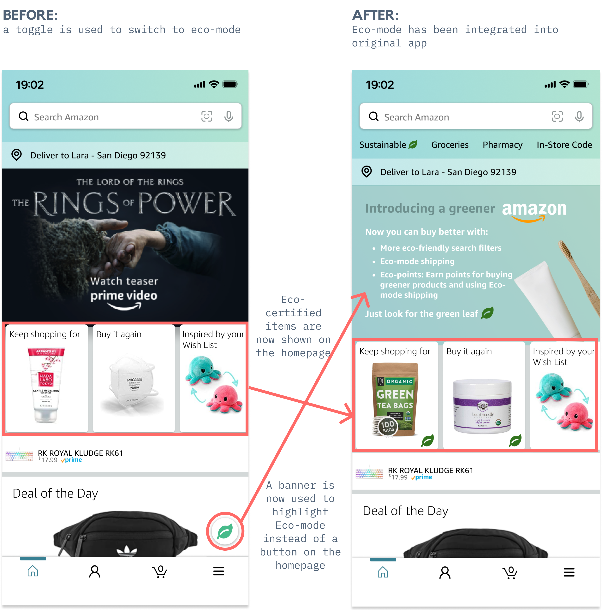
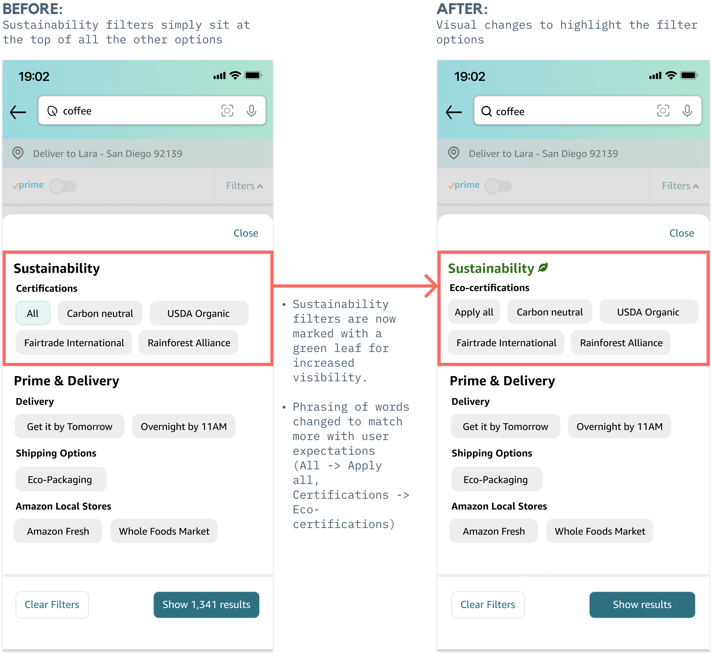

Overview
Team
Lara Canonizado
Brianna Fredeluces
Carmen Li
My Roles
User Research
UI Design
Prototyping
Tools
Figma
01
Context
Sustainability and Amazon
As natural disasters perennially loom over each news cycle, climate change
is as a pressing concern as ever. In turn, consumers are increasingly drawn
to more sustainable options, reflected in the boom in ethical branding and
sustainability product campaigns that can be seen from local mom-and-pop shops to the
corporate behemoths.
The Amazon app certainly does not enjoy a reputation for environmental
transparency or eco-friendly practices. However, with Amazon's immense userbase of 98 million
monthly users, changes in consumer behavior can effect greater environmental
impact. To that end, our user-centered design goal was crafting a system
that gave clearer cues for "greener" choices and incentivization for selecting
those options.
02
User Research
User Research and Key Insights
To whittle down our design direction, we conducted user surveys and interviews to garner data about the consumer behavior of Amazon users and their sentiment towards sustainability and environmental activism.
I try to be... sustainable but I still use Amazon a lot because it's just the most convenient option.
A compelling insight drawn from both the user research (exemplified by figures above) was that many of these Amazon users
had an interest in being more sustainable. However, they still make frequent Amazon purchases
and choose the fastest shipping option available--
despite being broadly cognizant of the negative environmental impact of this behavior
or personal scruples against Amazon.
Convenience, the defining factor, trumps personal sentiment regarding sustainability.
The common use case for Amazon users is the one-track-mind purchase
process: search for item, add to bag, checkout. The purchase flow is so
streamlined and conversion-driven it leaves little room for mulling over broader societal ramifications, even for
the most conscientious of its users.
Which leads us to our defining problem statement:
Problem
To reach their sustainability goals, environmentally-conscious Amazon users need clearer cues to make eco-friendly shopping decisions.
03
Initial design
Solutions
Users need more interface cues to nudge them towards making better consumer decisions. We sought to address this issue in our design by including:
- An "Eco-Mode" system toggle so users can opt into a "Greener" Amazon
- An additional filtering system for search which allows users to search by eco-certification
- More eco-oriented shipping options
- An Eco-dashboard whereby users can reflect on their overall purchasing behavior
Design Process + Iteration
After designing cursory wireframes, we conducted user testing. Based on the responses we gleaned these design conclusions:
- Users prefer a unified experience rather than a discrete mode to toggle in and out of
- The dashboard should be a simple as possible: users are not likely to engage in complicated metrics or charts in any way
- The fewer clicks the better: users tend to ignore opt-in informational overlays if given a choice
- Clarity of microcopy is paramount: textual cues need to be present and clear to avoid confusion
Design Challenge
How do we introduce eco-friendly interface changes that harmonize with the streamlined purchasing experience users come to expect from Amazon?
03
Redefining
Solutions Part 2: Addressing User Expectations
Amazon users want to "buy better" but also expect to retain the streamlined shopping process that characterizes the Amazon user experience. We distilled these considerations into our design decisions. Changes we settled on:
- Integrated design: instead of a separate "Eco-mode", eco-cues will be integrated into the default experience
- Search/Filtering: To maximize access and engagement with eco-filters, we positioned filters on top of the filtering options
- Checkout/shipping: Eco-shipping option will be integrated into the main shipping screen rather than presented in an overlay
- Dashboard: Rather than complicated metrics, users can reflect on their behavior by viewing past Eco-orders
- Eco Points: Instead of charts, users can both be incentivized and reflect on purchasing trends using an "Eco-points" system wherein users gain points for purchasing products with Eco-certifications or selecting Eco-shipping
04
Design Iteration
Finetuning our prototype
We set into action the design changes mentioned above unto our final prototypes:
Homepage

Search filter

Checkout / Shipping
Account
/ Eco-Points System
Takeaways
05
Takeaways
Balancing Act
Working on this project was truly an eye-opening experience into the importance of user research. Keeping queries open-ended can lead to insightful and unexpected responses, which guided our initial design problem: users who are self-purportedly environmentally-conscious tend to forget about the environment when they're shopping on an app that makes checking out one-click away. As such, we resolved that users need gentle nudges by way of UI cues to remind them. It was definitely a learning experience reconciling and translating these user expectations into tangible designs and a good reminder that even the simplest of UI changes can carry a bevy of design research, collaboration, and iterations behind them.